KNOWLEDGE PLATFORM
ONOFF Academy
지식이 연결되고, 경험이 성장시키는 ONOFF의 공식 학습 플랫폼
Library
철학 · Workflow · Today's Work · 전자문서 · Safety Report
목적 · 9단계 · 진행 시나리오 · 생명안전수칙
목적 · 작업 Flow · Safety Mark · Version
목적 · S-TRA · 유해위험요인 · 재해형태 · 안전조치
하역기계 · 유해물질 · 활선작업 · 로봇작업
설비점검 · 예방점검 · 기준
비상대응 · 대피 · 응급조치
사고사례 · Near Miss · 개선사례
ONOFF Knowledge Library
현장의 지식을
한곳에서
책을 선택하고, Chapter를 따라 배우고, 실제 Platform Workflow로 연결합니다.
- 01Read왜 필요한지 이해하기
- 02Learn사례와 Workflow 연결하기
- 03Practice나의 업무에 적용하기
- 04Complete다음 Chapter로 이어가기
한 번에 모든 것을 읽지 않습니다. 하나의 Scene에 집중하고 다음으로 이동합니다.
START YOUR JOURNEY
추천 콘텐츠
현장의 안전 원칙부터 실제 행동까지 하나의 과정으로 학습합니다.
12 Chapters · 약 45분최근 학습 위치
학습을 시작하면 마지막으로 읽은 Chapter가 이곳에 표시됩니다.
KNOWLEDGE LIBRARY
Library
업무 분야별 Book을 선택해 학습을 시작합니다.
현장 안전 Workflow와 Platform 사용 기준
설비 유지보수의 기본 원칙과 표준
제어 시스템 이해와 현장 운영 기준
자동화 시스템과 운영 지식
현장을 이끄는 리더의 판단과 소통
설비 신뢰성을 위한 점검과 정비 지식
PLATFORM HANDBOOK
Platform Handbook
ONOFF Platform의 철학과 업무 Workflow를 확인합니다.
- 구성
- 3 Parts · 5 Chapters
LEARNING MODE
어떻게 학습하시겠어요?
같은 Workflow를 목적에 맞는 방식으로 확인합니다.
Platform
Daily Safety
Safety Operation
MY ACADEMY
나의 학습 공간
읽은 Book, 진행 중인 Chapter와 Practice 기록이 앞으로 이곳에 연결됩니다.
Tool Box Meeting
위험성평가 기본교육
ONOFF Platform 활용
SOP 기본교육
ONOFF Platform 활용
SOP HANDBOOK
SOP란 무엇인가?
SOP는 작업자가 같은 기준과 순서로 안전하게 작업하기 위한 표준 작업절차입니다.
왜 SOP가 필요한가?
누가 작업하더라도 같은 기준과 순서로 수행할 수 있도록 작업의 표준 Flow를 정의합니다.
WHY
같은 작업이라도 사람마다 순서와 방법이 달라지면 작업 누락, 잘못된 조작, 품질 문제, 설비 이상과 안전사고로 이어질 수 있습니다.
SOP는 개인의 경험에만 의존하지 않고 작업자가 동일한 기준으로 준비하고 수행하며 완료 여부를 확인하도록 돕습니다.
CHECK POINT
- 작업 대상과 범위가 SOP와 일치하는지 확인합니다.
- 순서와 중요 POINT를 작업 전에 먼저 확인합니다.
- 모르는 절차를 임의로 판단하여 진행하지 않습니다.
SOP의 핵심
SOP는 위험성평가표가 아니라 작업 준비부터 완료 확인까지 이어지는 표준 작업 Flow입니다.
WORKFLOW
작업자는 정해진 순서와 중요 POINT를 확인하고, 각 단계의 완료 조건에 따라 작업을 수행합니다.
- 01작업 준비작업 대상, 도구와 준비 상태를 확인합니다.
- 02작업 순서정해진 순서와 방법을 확인합니다.
- 03중요 POINT누락하거나 혼동하기 쉬운 기준을 확인합니다.
- 04작업 수행표준 절차에 따라 작업합니다.
- 05완료 확인결과와 정상 상태를 확인합니다.
위험한 Step만 명확하게 표시합니다
모든 Step이 아니라 실제 위험이 존재하는 Step에만 Safety Mark와 안전정보를 연결합니다.
안전정보 표현
SOP 전체를 위험정보로 채우지 않습니다. 위험이 있는 Step에만 [S] Safety Mark를 표시하고 위험요인, 주의사항과 필요한 안전대책을 함께 확인합니다.
- 01작업 준비작업 조건과 준비물을 확인합니다.
- 02작업 Step 01표준 순서에 따라 진행합니다.
- 03작업 Step 02 [S]위험요인 확인 → 주의사항 확인 → 안전대책 적용
- 04작업 Step 03다음 작업을 표준대로 수행합니다.
- 05완료 확인작업 결과와 정상 상태를 확인합니다.
CHECK POINT
- [S] Step에서 어떤 위험이 발생할 수 있는지 확인합니다.
- 주의사항과 필요한 안전대책을 적용한 뒤 작업합니다.
- 조건이 SOP와 다르면 작업을 멈추고 확인합니다.
SOP와 위험성평가는 서로 연결됩니다
작업단계에서 위험을 평가하고 결정된 안전조치를 다시 위험 Step에 반영합니다.
SOP ↔ 위험성평가
SOP의 작업단계를 기준으로 위험요인을 평가할 수 있고, 위험성평가에서 결정된 안전조치는 다시 SOP의 위험 Step에 반영될 수 있습니다.
- 01SOP 작업단계실제 작업 순서와 조건을 확인합니다.
- 02위험요인 평가Step별 위험과 발생 조건을 확인합니다.
- 03안전조치 결정위험을 제거하거나 낮출 조치를 정합니다.
- 04SOP 반영위험 Step의 주의사항과 대책을 갱신합니다.
- 05현장 적용최신 절차와 대책을 작업자가 확인합니다.
작업 전 Version을 확인하세요
예전에 봤던 SOP가 아니라 현재 유효한 최신 SOP를 사용합니다.
VERSION / 개정이력
작업방법이나 설비조건이 변경되면 SOP도 개정될 수 있습니다. 작업 전 현재 Version, 개정일과 최근 개정내용을 확인합니다.
CHAPTER SUMMARY
- SOP는 작업의 표준 Flow입니다.
- 작업 순서와 중요 POINT를 확인합니다.
- 위험한 Step에만 S Mark와 안전대책을 표시합니다.
- 위험성평가와 서로 연결됩니다.
- 작업 전 최신 Version을 확인합니다.
SOP HANDBOOK
SOP 읽는 방법
긴 SOP를 처음부터 외우지 않습니다. 작업단계와 작업내용을 따라가며 중요한 POINT와 안전정보를 확인하는 방법을 배웁니다.
먼저 작업단계를 찾습니다
표 전체가 아니라 현재 수행할 작업 유형, 작업단계와 작업내용을 순서대로 찾습니다.
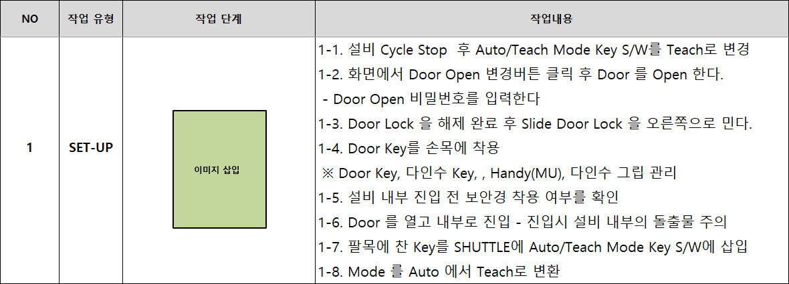
학습 목표
- 지금 어떤 작업단계인지 찾습니다.
- 무엇을 어떤 순서로 해야 하는지 확인합니다.
- 반드시 확인할 POINT가 있는지 찾습니다.
- 현재 Step에 안전위험이 있는지 확인합니다.
- 위험이 있다면 필요한 안전대책을 확인합니다.
READING FLOW
작업 유형 → 작업 단계 → 작업 내용 순서로 범위를 좁혀 읽습니다.
예를 들어 작업 유형이 SET-UP이고 현재 단계가 Door Open이라면, 해당 단계의 1-1, 1-2, 1-3 순서부터 확인합니다.
한 Step 안에서도 순서가 있습니다
현재 Step을 찾았다면 번호와 완료 조건을 따라 작업내용을 순서대로 확인합니다.
WHY
작업내용은 독립된 문장이 아니라 앞 단계의 확인 결과가 다음 조작으로 이어지는 하나의 순서입니다.
- 011-1 상태 확인작업 전 현재 상태를 확인합니다.
- 021-2 조작정해진 방법으로 조작합니다.
- 031-3 잠금·해제 확인조작 결과가 정상인지 확인합니다.
- 041-4 필요한 준비다음 작업에 필요한 상태를 준비합니다.
- 05완료Step의 완료 조건을 확인합니다.
CHECK POINT
- 번호를 건너뛰지 않고 순서대로 읽습니다.
- 각 조작 전에 필요한 상태 확인을 먼저 수행합니다.
- 완료 조건이 충족되지 않으면 다음 Step으로 이동하지 않습니다.
중요 POINT를 확인합니다
작업 Step에 별도 POINT 표시가 있다면 작업 전에 해당 내용을 반드시 확인합니다.
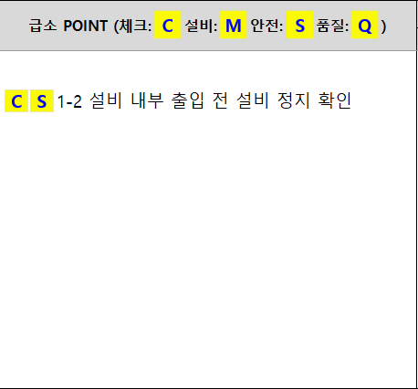
POINT
Reference에는 C, M, S, Q 표시 구조가 있습니다. CH02에서는 고객사별 상세 정의를 새로 해석하지 않고, 별도 POINT가 있는 Step은 작업 전에 내용을 확인한다는 원칙을 학습합니다.
CHECK POINT
- 현재 Step에 POINT 표시가 있는지 찾습니다.
- 표시와 연결된 문장을 작업 전에 읽습니다.
- [S] Safety Mark는 다음 Lesson에서 위험과 대책을 함께 확인합니다.
[S] Safety Mark를 확인합니다
모든 Step이 위험작업은 아니며, 위험이 존재하는 Step에서만 안전정보를 확인합니다.
WHY
SOP는 위험성평가표가 아닙니다. 모든 작업단계에 안전대책을 억지로 작성하지 않고 실제 위험이 있는 Step에만 [S] Safety Mark를 표시합니다.
- 01[S] 표시현재 Step에 Safety Mark가 있는지 확인합니다.
- 02위험요인어떤 위험이 발생할 수 있는지 확인합니다.
- 03주의사항위험을 피하기 위한 작업 기준을 읽습니다.
- 04안전대책작업 전에 필요한 조치를 적용합니다.
위험도와 안전대책을 함께 봅니다
위험도 숫자만 보지 않고 그 위험 때문에 필요한 안전대책을 함께 확인합니다.
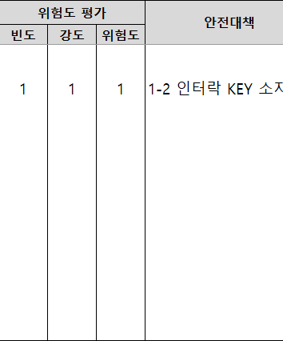
WHY
Safety Mark가 있는 작업이라면 위험수준과 함께 실제로 적용해야 하는 안전대책을 확인해야 합니다.
CHECK POINT
- 위험도와 안전대책이 같은 Step에 연결되어 있는지 확인합니다.
- 안전대책이 현장에 실제 적용되었는지 확인합니다.
- 조건이 다르거나 대책이 부족하면 작업을 시작하지 않습니다.
현장 적용
상세 위험성 판단과 계산 기준은 Risk Assessment Handbook에서 학습합니다.
최신 Version인지 확인합니다
개정된 SOP라면 변경된 Step과 안전정보를 우선 확인합니다.
VERSION / 개정이력
- 현재 Version
- 개정일
- 최근 개정내용
SUMMARY
SOP는 다음 순서로 읽습니다.
- 01현재 작업단계수행할 Step을 찾습니다.
- 02작업내용·순서번호 순서대로 확인합니다.
- 03중요 POINT별도 확인 표시를 읽습니다.
- 04[S] Safety Mark위험 Step인지 확인합니다.
- 05위험도 + 안전대책위험과 필요한 조치를 연결합니다.
- 06최신 Version유효한 절차인지 확인합니다.
- 07작업확인한 표준대로 수행합니다.
CHECK POINT
- 현재 수행할 Step을 찾았는가?
- 작업순서와 중요 POINT를 확인했는가?
- [S] 표시가 있다면 위험과 안전대책을 확인했는가?
- 현재 유효한 최신 Version인가?
SOP HANDBOOK
SOP 구성과 작성 구조
SOP에는 작업순서뿐 아니라 작업에 필요한 안전정보와 준비정보가 함께 구성됩니다.
SOP에는 무엇이 들어갈까?
어떤 정보가 어디에 있고 실제 작업에서 무엇을 확인해야 하는지 전체 구조부터 살펴봅니다.
학습 목표
SOP의 모든 항목을 암기하는 것이 아니라, 필요한 정보를 어디에서 찾아야 하는지 이해합니다.
- 01기본정보업체·담당자·연락처를 확인합니다.
- 02비상대응비상연락과 대피정보를 찾습니다.
- 03LOTO 정보에너지 차단 기준을 확인합니다.
- 04Tool List공구와 필요한 보호구를 확인합니다.
- 05작업 Flow준비·본작업·마무리 순서를 찾습니다.
- 06Safety Point위험 Step의 안전정보를 확인합니다.
- 07Check Sheet작업 결과와 완료 상태를 기록합니다.
- 08Version최신 개정이력을 확인합니다.
작업 Flow가 중심입니다
SOP의 중심은 준비작업부터 완료 확인까지 이어지는 실제 작업 흐름입니다.
WHY
Supporting Information이 많아도 작업자는 먼저 자신의 작업 Flow를 찾고, 각 단계 안의 Step을 순서대로 확인해야 합니다.
- 01준비작업작업조건·Tool·작업 전 상태를 확인합니다.
- 02본작업표준 Step을 순서대로 수행하고 위험 Step의 [S]를 확인합니다.
- 03마무리작업원상복구와 주변 정리를 수행합니다.
- 04완료 확인작업 결과와 정상 상태를 확인합니다.
CHECK POINT
- 준비 → 본작업 → 마무리 흐름이 구분되어 있는지 확인합니다.
- 각 영역의 Step 순서와 완료 조건을 확인합니다.
- 실제 작업내용은 승인된 현장 SOP를 따릅니다.
한 Step에는 하나의 행동을 명확하게
좋은 Step은 사용자가 읽는 즉시 무엇을 해야 하는지 이해할 수 있어야 합니다.
작업 전 설비 상태를 확인합니다.
번호 + 행동 + 필요한 조건·POINT작업 설비 상태 확인
위험 예상되는 위험 확인
안전대책 필요한 조치 확인
CHECK POINT
- Step 번호와 해야 할 행동이 명확한지 확인합니다.
- 필요한 조건이나 중요 POINT가 행동과 연결되어야 합니다.
- 실제 위험이 있고 별도 안전 확인이 필요한 Step에만 [S]를 사용합니다.
작업순서 외에도 필요한 정보가 있습니다
안전하고 정확한 작업을 위해 필요한 Supporting Information의 위치를 확인합니다.
WHY
모든 내용을 외우는 것이 아니라, 문제가 생기거나 확인이 필요할 때 정확한 정보를 어디에서 찾을 수 있는지 알아야 합니다.
CHECK POINT
- 비상상황에서 연락처와 대피정보를 바로 찾을 수 있는가?
- 에너지 차단과 필요한 Tool 정보를 확인할 수 있는가?
- 작업 완료 후 사용할 Check Sheet가 연결되어 있는가?
Version과 개정이력
개정이력은 무엇이 바뀌었는지 작업자가 확인하기 위한 정보입니다.
언제 변경될까?
- 작업방법·설비·Tool 변경
- 안전조치 변경
- 위험성평가 결과 반영
- 사고 또는 개선사항 반영
- 01현재 Version사용 중인 문서의 버전을 확인합니다.
- 02개정일언제 변경되었는지 확인합니다.
- 03개정내용변경 사유와 내용을 확인합니다.
- 04변경 Step작업방법과 안전정보의 변경점을 확인합니다.
SOP와 위험성평가는 함께 개선됩니다
현장의 변화가 두 문서에 반영되어 최신 작업 기준과 안전조치로 이어집니다.
- 01SOP 작업 Step현재 작업방법을 확인합니다.
- 02새로운 위험 발견변경되거나 추가된 위험을 찾습니다.
- 03위험성평가 검토위험수준과 기존 조치를 재검토합니다.
- 04안전조치 개선필요한 조치를 결정합니다.
- 05SOP 반영해당 Step에 새 기준을 연결합니다.
- 06Version 개정변경내용을 기록하고 공유합니다.
SUMMARY
- 전체 구조를 먼저 확인합니다.
- 내 작업 Flow와 현재 Step을 찾습니다.
- [S]가 있다면 위험과 안전대책을 확인합니다.
- 필요한 Supporting Information을 찾습니다.
- 최신 Version을 확인합니다.
CHECK POINT
- 준비 → 본작업 → 마무리 Flow가 명확한가?
- 위험 Step에 [S]와 안전정보가 연결되어 있는가?
- Tool·LOTO·비상정보를 찾을 수 있는가?
- 현재 문서가 최신 Version인가?
SOP HANDBOOK
작업순서와 Safety Step 찾아보기
가상의 설비 점검작업에서 작업 Flow와 순서, Safety Step과 최신 SOP Version을 직접 판단합니다.
설비 점검 SOP 직접 읽어보기
설비 내부 상태를 확인하기 위한 일반 점검작업을 표준 순서에 따라 준비합니다.
✓ PRACTICE COMPLETE
SOP Reader Basic
작업 Flow와 순서를 확인하고 Safety Step과 최신 SOP Version을 직접 판단했습니다.
- ✓ 작업 Flow 확인
- ✓ 작업순서 판단
- ✓ Safety Step 확인
- ✓ 안전대책 확인
- ✓ 최신 Version 확인
SOP HANDBOOK
Platform에서 SOP 활용
Academy에서 SOP를 이해하고 연습했다면, 실제 작업에서는 필요한 SOP를 빠르게 확인하고 안전 확인 후 작업을 시작합니다.
오늘 작업의 SOP 확인
오늘 작업에 필요한 SOP와 현재 유효한 Version인지 먼저 확인합니다.
WHY
Platform은 SOP 전체를 매번 다시 학습하는 곳이 아닙니다. 작업자는 Today's Work에서 오늘 작업과 연결된 SOP를 빠르게 열고, 현재 작업 Step과 Safety Point를 확인합니다.
- 01Today's Work오늘 수행할 작업을 선택합니다.
- 02관련 SOP작업에 연결된 SOP를 확인합니다.
- 03SOP 열람필요한 작업 기준을 읽습니다.
- 04Version 확인현재 유효한 최신 문서인지 확인합니다.
- 05Step / Safety Point오늘 수행할 Step과 위험 정보를 확인합니다.
CHECK POINT
- 오늘 작업과 SOP가 정확히 연결되어 있는가?
- 현재 Version과 개정일이 유효한가?
- 오늘 수행할 Step과 [S] Safety Point를 확인했는가?
최소 안전확인
SOP에서 작업방법을 확인한 뒤 오늘 작업의 핵심 위험과 안전조치만 연결해 확인합니다.
WHY
Daily Work는 짧고 명확해야 합니다. SOP 확인 뒤 위험성평가 또는 Daily Risk Check로 오늘의 핵심 위험을 확인하고, 불필요한 추가 단계를 만들지 않습니다.
- 01SOP 확인작업방법과 Safety Point를 확인합니다.
- 02위험성평가평가된 위험과 안전조치를 확인합니다.
- 03또는 Daily Risk Check오늘 달라진 작업조건과 위험을 확인합니다.
- 04전자서명필요한 문서와 안전정보 확인을 기록합니다.
- 05Safety Start안전 준비 후 작업을 시작합니다.
CHECK POINT
- SOP에서 작업방법을 확인했는가?
- 위험성평가 또는 Daily Risk Check로 오늘의 위험을 확인했는가?
- 필요한 안전조치가 현장에 적용되어 있는가?
전자서명
오늘 작업에 필요한 SOP와 위험·안전조치를 확인했다는 의미로 서명합니다.
전자서명의 의미
전자서명 전에 SOP 전체 항목을 다시 체크하는 복잡한 Checklist를 만들지 않습니다. 필요한 문서와 핵심 안전정보를 확인한 뒤 하나의 작업 흐름으로 기록합니다.
- 01Today's Work오늘 작업을 선택합니다.
- 02SOP 확인 ✓작업방법과 최신 Version을 확인합니다.
- 03Risk 확인 ✓위험성평가 또는 Daily Risk Check를 확인합니다.
- 04전자서명확인 결과를 기록합니다.
- 05Safety Start안전 준비 후 작업을 시작합니다.
변경된 SOP라면?
Version 번호뿐 아니라 변경된 Step과 안전정보를 확인한 뒤 작업합니다.
- 01최신 Version현재 유효한 문서를 확인합니다.
- 02개정내용무엇이 변경되었는지 확인합니다.
- 03변경된 Step작업방법과 Safety Point를 다시 봅니다.
- 04위험성평가 검토필요하면 관련 위험과 조치를 재검토합니다.
- 05작업최신 기준을 적용하여 수행합니다.
SOP ↔ 위험성평가
작업방법이 변경되면 위험성평가를 다시 검토할 수 있고, 새로운 위험이나 안전조치가 발견되면 SOP를 개정할 수 있습니다. 두 문서는 서로 연결되어 함께 개선됩니다.
FINAL WORKFLOW
Academy — SOP 이해 → SOP Practice
Platform — Today's Work → SOP 확인 → 위험성평가 / Daily Risk Check → 전자서명 → Safety Start → 작업
SOP HANDBOOK COMPLETE
- ✓ SOP 역할 이해
- ✓ SOP 읽는 방법 이해
- ✓ SOP 구성 이해
- ✓ Safety Step 이해
- ✓ Version / 개정이력 확인
- ✓ SOP Practice 완료
- ✓ Platform 활용 흐름 이해
작업 Flow를 이해하고 SOP를 실제 작업에서 확인하는 방법까지 완료했습니다.
RISK ASSESSMENT HANDBOOK
위험성평가란 무엇인가?
작업의 위험요인을 미리 찾고 평가하여 사고가 발생하기 전에 개선하는 안전활동입니다.
왜 위험성평가가 필요한가?
사고가 발생한 뒤 원인을 찾는 것이 아니라 작업 전에 위험을 발견하는 것이 위험성평가의 시작입니다.
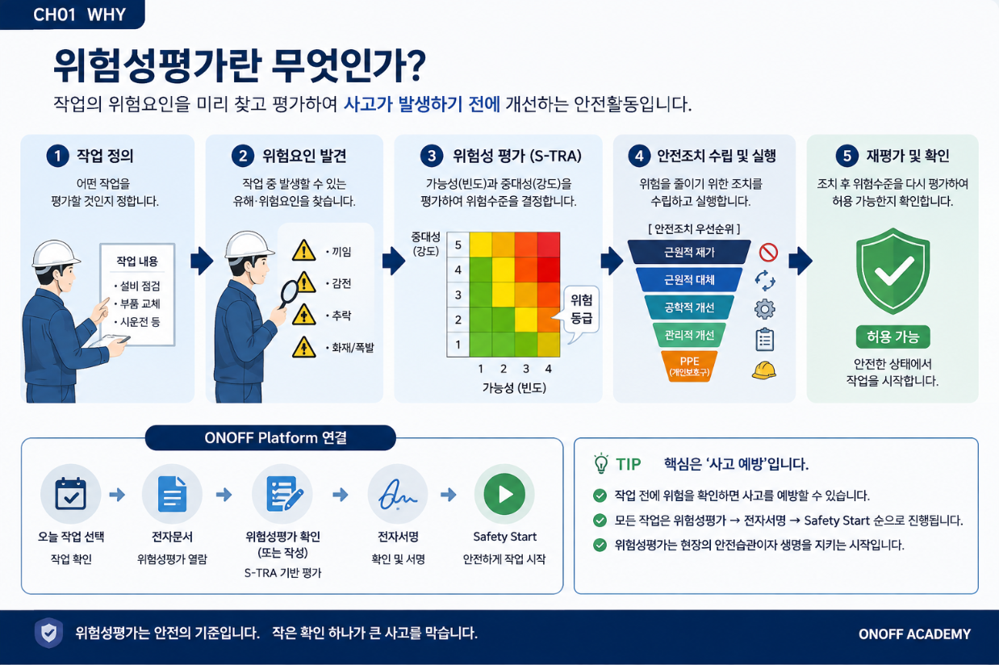
WHY
위험성평가는 서류를 완성하는 업무가 아니라 작업 전에 위험을 찾아 실제 사고 가능성을 낮추는 예방 활동입니다.
핵심 내용
- 01 위험요인 발견
작업 과정에서 발생할 수 있는 위험을 찾습니다. - 02 위험성 판단
발견한 위험이 얼마나 중요한지 평가합니다. - 03 개선대책 수립
위험을 제거하거나 낮출 방법을 결정합니다. - 04 작업자 공유
평가 결과와 안전조치를 실제 작업자에게 전달합니다.
위험성평가 기본 흐름
위험을 찾는 단계부터 개선 결과를 다시 확인하는 단계까지 하나의 Cycle로 진행합니다.
WORKFLOW
위험성평가는 작성으로 끝나지 않습니다. 현장 적용과 개선 결과 확인까지 하나의 Cycle입니다.
- 01작업 확인평가할 작업 범위와 조건을 확인합니다.
- 02위험요인 발굴작업 단계별 위험을 찾습니다.
- 03위험성 평가가능성과 중대성을 판단합니다.
- 04개선대책위험을 제거하거나 낮춥니다.
- 05작업자 공유평가 결과와 조치를 전달합니다.
- 06작업정해진 안전조치를 적용합니다.
- 07재평가개선 결과와 남은 위험을 확인합니다.
ONOFF에서는 이렇게 연결됩니다.
각 문서를 따로 관리하지 않고 하나의 작업 Workflow 안에서 연결합니다.
ONOFF 연결
위험성평가 결과는 SOP와 TBM을 통해 작업자에게 공유되고, Safety Start 이후 작업과 개선 기록까지 이어집니다.
- 01위험성평가작업 위험과 개선대책을 정합니다.
- 02SOP안전한 작업 절차에 반영합니다.
- 03TBM작업 전 참여자와 공유합니다.
- 04Safety Start안전 준비 완료를 확인합니다.
- 05작업 수행대책을 적용하여 작업합니다.
- 06Safety Report위험과 개선사항을 기록합니다.
- 07개선현장의 문제를 조치합니다.
- 08재평가조치 후 위험 수준을 다시 확인합니다.
Chapter 핵심 정리
위험성평가는 작업 전 예방부터 개선 후 재평가까지 이어지는 현장 활동입니다.
COMPLETE
- 위험성평가는 작업 전 예방활동이다.
- 작업자가 위험요인 발굴에 참여한다.
- 평가 결과는 실제 작업에 반영한다.
- SOP와 TBM에 연결하여 작업자에게 공유한다.
- 개선 후 다시 확인하고 평가한다.
RISK ASSESSMENT HANDBOOK
위험성평가 구성 이해
복잡해 보이는 위험성평가표도 작업에서 시작해 안전조치까지 순서대로 읽으면 이해할 수 있습니다.
위험성평가표는 이렇게 읽습니다
모든 항목을 암기하지 않고 작업과 위험, 판단과 조치의 연결을 먼저 확인합니다.
SUMMARY
위험성평가표는 숫자부터 보는 것이 아니라 작업과 위험요인의 관계부터 읽습니다.
- 01작업 확인무슨 작업을 평가하는가?
- 02유해·위험요인 파악어디에서 어떤 위험이 발생할 수 있는가?
- 03위험성 판단사고 가능성과 결과의 중대성을 확인합니다.
- 04안전조치위험을 줄이기 위해 어떤 조치를 적용했는가?
- 05재평가조치 후 위험이 실제로 낮아졌는가?
실제 평가표 읽기
실제 S-TRA 작성 예시를 영역별로 확대하여 표의 논리를 순서대로 확인합니다.
01 작업 확인
무슨 작업을 평가하는가?
단계 및 내용에서 평가 대상 작업과 수행 범위를 확인합니다.
02 위험 확인
무엇 때문에 위험한가?
작업 중 노출될 수 있는 유해·위험요인을 확인합니다.
03 사고 이해
어떤 사고가 날 수 있고 왜 발생하는가?
재해·상해형태와 구체적인 발생원인을 연결해 읽습니다.
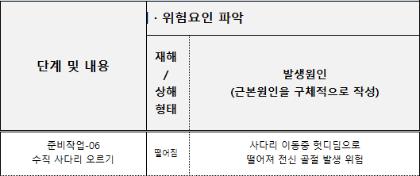
04 최초 위험성
조치 전 위험은 어느 정도인가?
현재 안전조치를 반영하기 전의 위험수준을 중대성과 가능성으로 판단합니다.
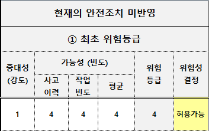
05 안전조치
위험을 낮추기 위해 무엇을 적용했는가?
공학적 제어, 관리적 제어, 개인보호구 등 실제 적용된 대책을 확인합니다.
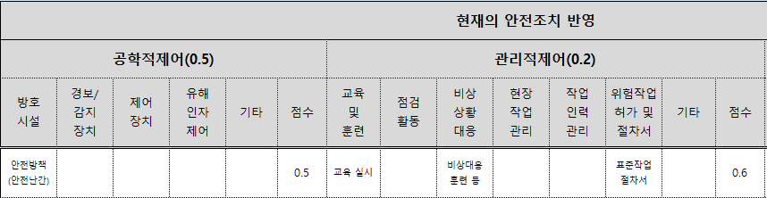
06 현재 위험성
조치 후 위험이 허용 가능한 수준으로 낮아졌는가?
안전조치를 반영한 뒤 위험수준이 얼마나 낮아졌고 허용 가능한지를 확인합니다.
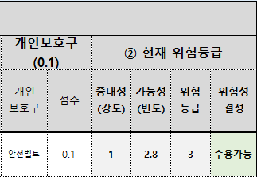
하나의 사례로 따라가기
실제 평가표의 한 Row를 작업부터 현재 위험성까지 순서대로 따라갑니다.
CASE
예시 Row는 준비작업 중 수직 사다리 오르기 작업입니다. 각 Crop을 연결해 하나의 평가가 완성되는 과정을 확인합니다.
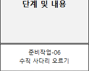
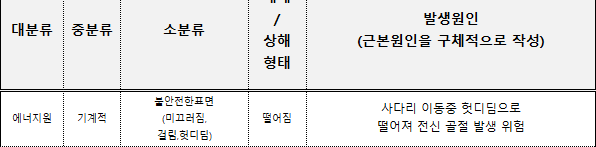
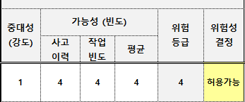
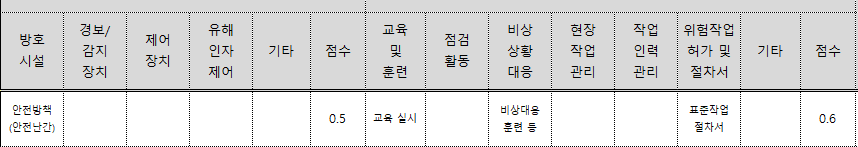
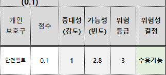
연결 Flow
작업 확인 → 위험요인과 발생원인 → 최초 위험성 → 안전조치 → 현재 위험성 순서로 읽으면 하나의 평가 Row가 현장 예방활동으로 연결됩니다.
위험성평가표 CHECK POINT
평가표에서 반드시 연결해 확인해야 하는 다섯 가지 질문입니다.
CHECK POINT
- 어떤 작업인가?
- 어떤 위험요인이 있는가?
- 어떤 사고로 이어질 수 있는가?
- 현재 어떤 안전조치가 적용되어 있는가?
- 조치 후 위험수준은 허용 가능한가?
RISK ASSESSMENT HANDBOOK
S-TRA 위험성 판단 이해
사고 가능성과 중대성을 기준으로 위험수준을 판단하고, 안전조치 후 다시 위험성을 확인하는 방법을 이해합니다.
가능성(F)은 어떻게 정하는가?
사고이력과 업무·작업빈도를 함께 확인하여 사고가 발생할 가능성을 판단합니다.
WHY
가능성은 작업자의 느낌으로 정하지 않습니다. 최근 사고이력과 실제 작업빈도를 같은 기준표에서 확인합니다.
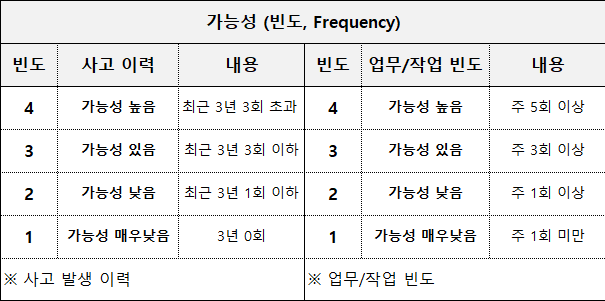
판단 기준
사고이력: 4 최근 3년 3회 초과 · 3 최근 3년 3회 이하 · 2 최근 3년 1회 이하 · 1 최근 3년 0회
업무·작업빈도: 4 주 5회 이상 · 3 주 3회 이상 · 2 주 1회 이상 · 1 주 1회 미만
계산
가능성(F) = (사고이력 + 작업빈도) ÷ 2
사고이력 4, 작업빈도 4라면 (4 + 4) ÷ 2 = 가능성 4입니다.
CHECK POINT
- 사고이력의 조회 기간과 횟수를 정확히 확인합니다.
- 일시적인 작업이 아니라 실제 반복 빈도를 적용합니다.
- 두 기준의 평균값이 가능성(F)이 되는지 확인합니다.
중대성(S)은 어떻게 정하는가?
사고가 발생했을 때 예상되는 결과의 심각성을 기준표에서 확인합니다.
WHY
중대성은 사고의 발생 횟수가 아니라, 한 번 발생했을 때 사람에게 미칠 수 있는 결과를 판단하는 값입니다.
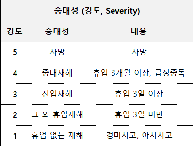
판단 기준
5 사망 · 4 중대재해(휴업 3개월 이상, 급성중독) · 3 산업재해(휴업 3일 이상) · 2 그 외 휴업재해(휴업 3일 미만) · 1 휴업 없는 재해(경미사고, 아차사고)
CHECK POINT
- 현재 피해가 아니라 발생 가능한 최대 결과를 확인합니다.
- 휴업기간과 재해 결과를 실제 기준에 맞춰 판단합니다.
- 가능성과 중대성을 서로 혼합하지 않습니다.
최초 위험성 계산
가능성과 중대성을 연결하여 안전조치 전 위험수준을 확인합니다.
계산 흐름
사고이력 4 + 작업빈도 4 → 가능성(F) = (4 + 4) ÷ 2 = 4
중대성(S) = 1
위험성(R) = 중대성(S) × 가능성(F) = 1 × 4 = 4
CHECK POINT
- 사고이력과 작업빈도의 평균으로 가능성(F)을 구합니다.
- 중대성(S)과 가능성(F)을 곱해 위험성(R)을 구합니다.
- 숫자의 출처가 실제 기준표와 일치하는지 확인합니다.
위험성 수준을 색으로 확인
S-TRA Matrix에서 중대성과 가능성이 만나는 점수와 허용 여부를 확인합니다.
WHY
계산된 점수는 Matrix의 색상과 허용기준을 통해 작업 가능 여부로 연결됩니다.
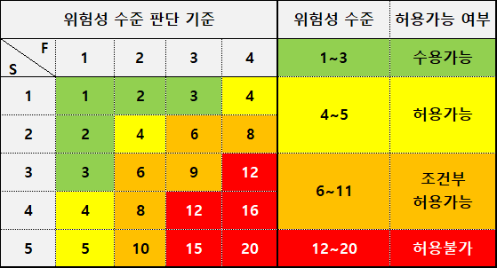
판단 기준
1~3 초록 — 수용가능 · 4~5 노랑 — 허용가능 · 6~11 주황 — 조건부 허용가능 · 12~20 빨강 — 허용불가
예시 S=1, F=4는 Matrix 교차값 4이며 노랑, 허용가능에 해당합니다.
CHECK POINT
- Matrix의 세로축 S와 가로축 F를 바꾸어 읽지 않습니다.
- 계산값과 색상, 허용 여부를 함께 확인합니다.
- 조건부 허용과 허용불가는 필요한 조치 없이 진행하지 않습니다.
안전조치는 어떤 순서로 적용하는가?
위험을 가장 근본적으로 낮출 수 있는 조치부터 우선 검토합니다.
우선순위
제거 → 대체 → 공학적 제어 → 관리적 제어 → 개인보호구(PPE) 순으로 검토합니다.
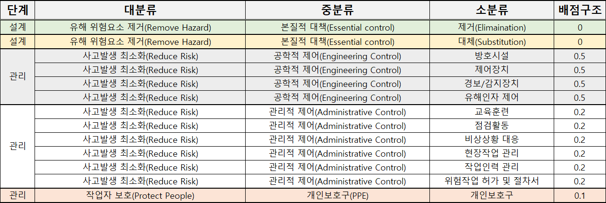
배점 기준
제거 0 · 대체 0 · 공학적 제어 0.5 · 관리적 제어 0.2 · 개인보호구 0.1
공학적 제어에는 방호시설·제어장치·경보/감지장치·유해인자 제어가 포함됩니다. 관리적 제어에는 교육훈련·점검활동·비상대응·현장작업 관리·작업인력 관리·위험작업 허가 및 절차서가 포함됩니다.
CHECK POINT
- 위험 자체를 제거하거나 대체할 수 있는지 먼저 검토합니다.
- 공학적 제어와 관리적 제어를 PPE보다 우선 검토합니다.
- 보호구만 선택하고 대책이 끝났다고 판단하지 않습니다.
조치 후 다시 평가
최초 위험성에 안전조치를 적용한 뒤 현재 위험성과 허용 가능 여부를 다시 확인합니다.
Flow
최초 위험성 → 안전조치 적용 → 현재 위험성 재평가 → 허용 가능 여부 확인
CHECK POINT
- 사고이력과 작업빈도를 확인했는가?
- 사고의 중대성을 확인했는가?
- 최초 위험성과 적용한 안전조치가 연결되는가?
- 조치 후 위험수준이 낮아졌는가?
- 최종적으로 허용 가능한가?
공식 산식을 확인할 수 없는 경우에는 안전조치를 반영하여 현재 위험성을 다시 평가한다는 원칙까지만 적용합니다.
사다리 작업 위험성평가 직접 해보기
작업 이미지를 보고 위험요인을 찾은 뒤 S-TRA 방식으로 위험성을 직접 판단해보세요.
✓ PRACTICE COMPLETE
사다리 작업 위험성평가를 완료했습니다.
실제 작업 이미지를 보고 위험요인 발견부터 S-TRA 위험성 판단, 안전조치 선택까지 완료했습니다.
- ✓ 위험요인 확인
- ✓ 재해형태 확인
- ✓ 가능성 계산
- ✓ 최초 위험성 판단
- ✓ 위험수준 확인
- ✓ 안전조치 선택
RISK ASSESSMENT HANDBOOK
Daily Safety
모든 현장작업에 정식 위험성평가가 연결되어 있지는 않습니다. 오늘 작업의 위험과 안전조치를 확인한 뒤 작업을 시작합니다.
왜 Daily Safety가 필요한가?
정식 평가가 없는 순간에도 위험 확인 없이 작업을 시작하지 않도록 안전 공백을 보완합니다.
WHY
현장에서는 모든 작업을 사전에 하나의 정식 위험성평가로 정의하기 어렵습니다. 비정형 작업, 설비 이상 대응, 단순 조치·조작·부품 교체, 현장 지원처럼 실제 작업내용이 현장에서 결정되는 경우가 있습니다.
정식 위험성평가가 없다는 이유로 위험 확인 없이 작업을 시작해서는 안 됩니다.
관련 SOP 확인↓전자서명↓Safety Start
위험성평가가 있는 작업
평가서를 다시 작성하지 않고 오늘도 위험과 안전조치가 유효한지 확인합니다.
- 01오늘 작업 선택
- 02연결된 평가 확인
- 03핵심 위험 확인
- 04안전조치 확인
- 05조건 차이 확인
- 06관련 SOP 확인
- 07전자서명 → Safety Start
위험성평가가 없는 작업
정식 S-TRA를 즉석에서 작성하지 않고 Daily Risk Check를 수행합니다.
Daily Risk Check
오늘 작업에 해당되는 핵심 위험유형을 빠르게 선택하고 필요한 안전조치를 확인하는 과정입니다.
- 01오늘 작업·대응유형 확인
- 02위험유형 선택
- 03핵심 안전조치 확인
- 04관련 SOP 확인
- 05전자서명
- 06Safety Start
오늘 작업에는 어떤 위험이 있나요?
해당되는 핵심 위험유형을 선택하는 Daily Risk Check Concept UI입니다.
위험에 맞는 안전조치 확인
선택한 오늘의 위험유형에 필요한 핵심 안전조치가 실제로 적용되어 있는지 확인합니다.
이전 Lesson에서 오늘 작업의 위험유형을 먼저 선택하세요. 위험을 선택하기 전에는 안전조치가 확정되지 않습니다.
작업조건이 달라졌다면?
기존 평가 또는 예상했던 작업조건과 실제 현장이 같은지 확인합니다.
반복되는 작업은 정식 평가로
Daily Risk Check 결과를 일회성 체크로 버리지 않고 표준화 후보로 연결합니다.
- 01Daily Risk Check
- 02동일·유사 위험 반복
- 03작업 Pattern 확인
- 04관리자 검토
- 05정식 위험성평가 등록 검토
SOP ↔ 위험성평가
SOP의 작업단계를 기준으로 위험을 평가할 수 있고, 위험성평가에서 결정된 안전조치는 다시 SOP에 반영될 수 있습니다. 관련 SOP가 존재하면 Daily Risk Check에서 함께 확인합니다.
CHECK POINT
- 오늘 작업이 무엇인지 확인했는가?
- 정식 위험성평가가 연결되어 있는가?
- 없다면 Daily Risk Check를 수행했는가?
- 오늘 해당되는 위험과 실제 안전조치를 확인했는가?
- 관련 SOP와 작업조건 변경사항을 확인했는가?
RISK ASSESSMENT HANDBOOK
Platform에서 위험성평가 활용
Academy에서 이해하고 연습한 위험성평가를 실제 ONOFF Platform의 전자문서와 작업 Workflow에 연결합니다.
배우는 곳과 실행하는 곳
Academy와 Platform의 역할을 구분하고 학습 결과가 실제 업무로 이어지는 위치를 확인합니다.
Academy
위험성평가의 WHY와 구조, S-TRA 판단 기준을 이해하고 PRACTICE를 통해 직접 연습하는 곳입니다.
- 01WHY
- 02구조 이해
- 03S-TRA 판단 이해
- 04PRACTICE
Platform
실제 업무에서 위험성평가를 작성하고 확인·저장·관리하며 전자서명과 작업을 연결하는 곳입니다.
- 01실제 전자문서
- 02작성·확인
- 03저장·관리
- 04전자서명
- 05실제 작업 연결
정식 위험성평가
CH01~CH03에서 배운 구조가 Platform의 실제 작성 흐름에서 어떻게 기준이 되는지 확인합니다.
WHY
정식 위험성평가는 작업과 위험요인, 위험성 판단과 안전조치를 하나의 기록으로 연결하여 반복 가능한 안전 기준을 만듭니다.
- 01전자문서
- 02위험성평가
- 03작업 확인
- 04유해·위험요인
- 05위험성 판단
- 06안전조치
- 07저장·관리
SOP와 위험성평가
두 문서는 고정된 일방향 관계가 아니라 작업 변화와 개선사항을 서로 반영합니다.
연결 원칙
SOP의 작업단계를 기준으로 유해·위험요인을 평가할 수 있습니다. 위험성평가에서 결정한 안전조치는 다시 SOP의 작업 절차와 기준에 반영할 수 있습니다.
- 01SOP 작업단계 확인
- 02유해·위험요인 평가
- 03안전조치 결정
- 04SOP 개선 반영
- 05변경사항 재평가
Daily Work 연결
CH04에서 확정한 두 경로가 Platform 전체 Workflow의 어디에 위치하는지 확인합니다.
정식 위험성평가가 있는 작업
- 01Today's Work
- 02위험성평가 연결
- 03핵심 위험·안전조치 확인
- 04관련 SOP 확인
- 05전자서명
- 06Safety Start
정식 위험성평가가 없는 작업
- 01Today's Work
- 02Daily Risk Check
- 03위험유형 선택
- 04핵심 안전조치 확인
- 05관련 SOP·전자서명
- 06Safety Start
작업 현장에서 연결됩니다
작업 중 발견한 위험과 개선사항이 위험성평가와 SOP로 돌아오는 순환 구조를 확인합니다.
- 01Safety Start
- 02작업 수행
- 03Safety Report
- 04위험·개선사항 발견
- 05위험성평가 재검토
- 06SOP 개선
Handbook 핵심 흐름
Academy의 이해·학습·PRACTICE가 Platform의 작성·확인·관리로 이어지고, Daily Safety와 전자서명, Safety Start, 작업, Safety Report를 거쳐 개선과 재평가로 돌아옵니다.
완료 내용
- 위험성평가 개념 이해
- 평가표 읽기와 S-TRA 판단 이해
- PRACTICE 수행
- Daily Safety 이해
- Platform 활용 이해
TBM HANDBOOK
TBM이란 무엇인가?
Tool Box Meeting — 작업 시작 전 모든 작업자가 함께 위험요인을 확인하고 안전하게 작업을 시작하기 위한 현장 참여형 안전활동입니다.
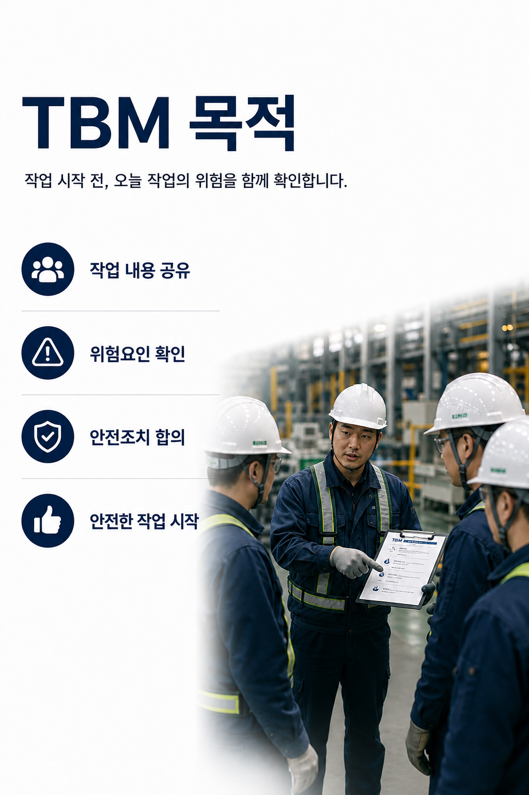
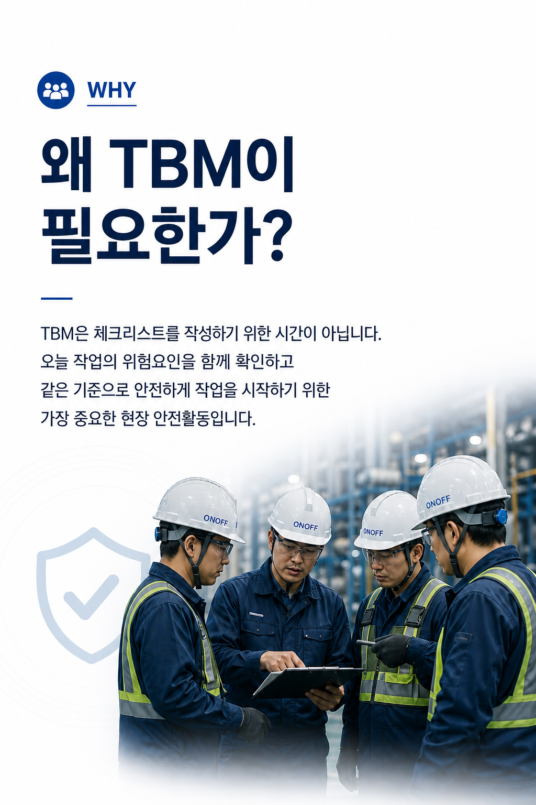
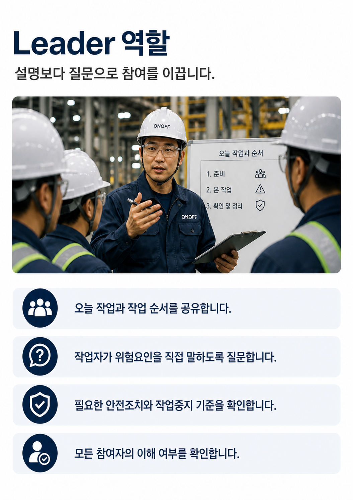
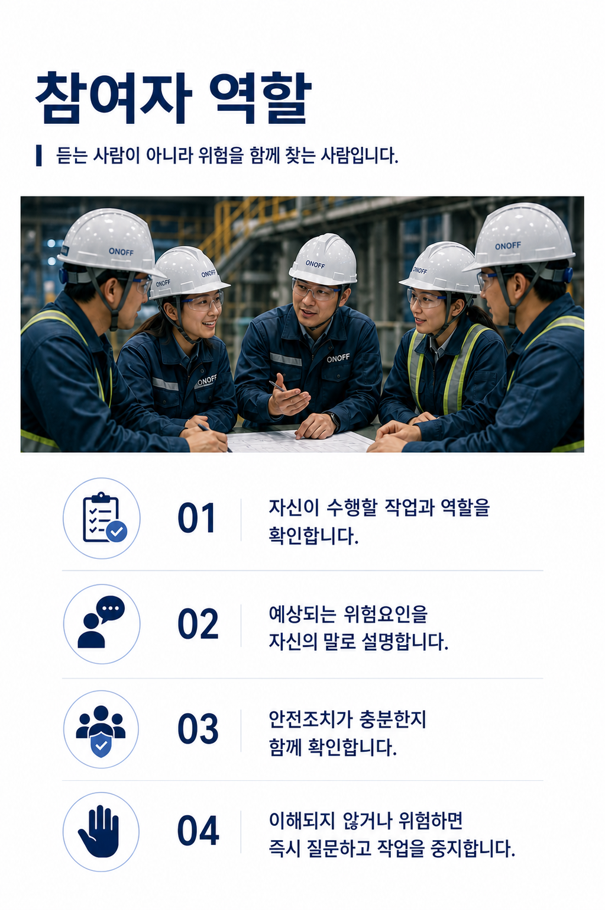
TBM HANDBOOK
TBM 진행 9단계
작업 준비부터 최종 확인까지 같은 순서로 진행합니다.
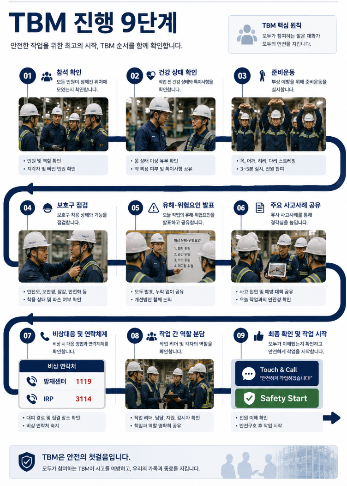
TBM HANDBOOK
TBM 진행 시나리오
리더의 질문과 작업자의 확인이 함께 이루어져야 합니다.
참석 확인
모든 참여자가 정해진 위치에 모였는지 확인합니다.
Leader
“모두 정해진 위치에 모였습니까?”
참여자
“네. 모두 참석했습니다.”
CHECK POINT
- 모든 참여자가 정해진 위치에 모였는지 확인
- 결근자와 지각자 확인
- 오늘 작업 인원과 역할 확인
건강 상태 확인
작업 전 건강 상태와 특이사항을 확인합니다.
Leader
“몸 상태는 어떠십니까?”
“약 복용자는 있습니까?”
참여자
“이상 없습니다.”
CHECK POINT
- 몸 상태 이상 유무 확인
- 약 복용 여부 확인
- 특이사항을 Leader와 공유
준비운동
작업 전 몸을 풀어 부상 위험을 줄입니다.
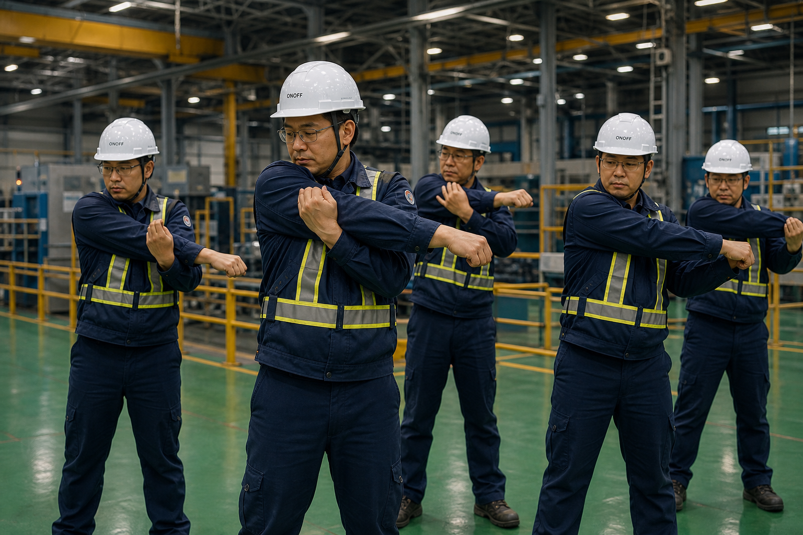
Leader
“준비운동을 함께 시작하겠습니다.”
CHECK POINT
- 목과 어깨, 허리, 무릎 스트레칭
- 3~5분 이상 충분히 진행
- 모든 참여자가 함께 실시
보호구 점검
개인보호구의 착용 상태와 이상 여부를 서로 확인합니다.
Leader
“보호구를 서로 확인해 주세요.”
CHECK POINT
- 안전모 턱끈 착용 확인
- 보안경, 장갑, 안전화 상태 확인
- 작업별 추가 보호구 확인
- 안전대 체결 상태 확인
유해·위험요인 발표
작업 중 발생할 수 있는 위험을 참여자가 직접 공유합니다.
Leader
“오늘 작업에서 발생할 수 있는 위험요인을 발표해 주세요.”
참여자 발표
“협착 위험이 있습니다.”
“낙하 위험이 있습니다.”
“감전 위험이 있습니다.”
CHECK POINT
- 작업별 유해·위험요인 발표
- 개선 의견 함께 공유
- 모든 참여자의 이해 여부 확인
주요 사고사례 공유
유사 사고사례를 통해 오늘 작업의 교훈을 확인합니다.
Leader
“유사 사고사례를 함께 확인하겠습니다.”
CHECK POINT
- 최근 사고사례 공유
- 사고 원인과 예방대책 확인
- 오늘 작업에서 주의할 부분 인식
비상대응 및 연락체계
비상 시 행동요령과 연락체계를 확인합니다.
Leader
“비상 연락체계를 확인하겠습니다.”
CHECK POINT
- 대피 경로와 집결장소 확인
- 비상 연락망 숙지
- 내상 시 행동요령 확인
- 비상 연락처 확인
비상 연락처
방재센터 1119
IRP 3114
작업 간 역할 분담
작업별 역할과 책임을 명확하게 확인합니다.
Leader
“오늘 작업 역할을 확인하겠습니다.”
CHECK POINT
- 각자의 역할과 책임 확인
- 작업 순서와 방법 공유
- 의사소통 채널 확인
최종 확인 및 작업 시작
모든 내용을 다시 확인하고 안전하게 작업을 시작합니다.
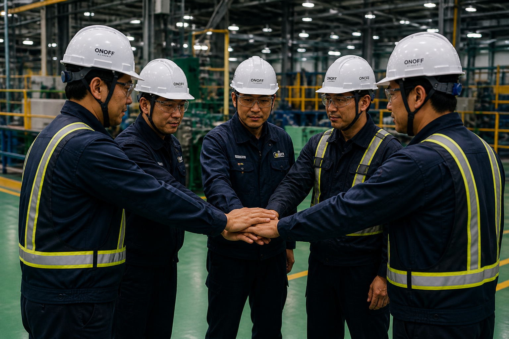
Leader
“모두 이해했습니까?”
참여자
“네. 안전하게 작업하겠습니다.”
CHECK POINT
- 모든 참여자의 이해 여부 확인
- 이상 및 특이사항 확인
- Touch & Call로 안전 의지 확인
- Safety Start 후 작업 시작
Touch & Call
안전! OK!
Safety Start
최종 확인이 완료되면 작업을 시작합니다.
TBM HANDBOOK
생명안전수칙 10
생명과 직결되는 작업은 시작 전에 반드시 핵심 통제사항을 확인합니다.
- 에너지 차단정비 전 전기·압력·열·중력 에너지를 차단하고 잠금 상태를 확인합니다.
- 추락 예방고소작업 시 작업발판, 난간과 추락방지 보호구를 확인합니다.
- 밀폐공간출입 전 허가, 가스농도 측정, 환기와 감시인을 확인합니다.
- 양중작업인양계획, 줄걸이 상태를 확인하고 매달린 하중 아래에 들어가지 않습니다.
- 차량·중장비작업반경을 구분하고 유도자와 운전자의 신호체계를 확인합니다.
- 화기작업가연물을 제거하고 화기허가, 소화설비와 화재감시자를 확인합니다.
- 전기작업무전압 상태와 접지, 절연보호구 및 접근 제한을 확인합니다.
- 유해물질물질 정보, 노출 방지, 보호구와 누출 대응방법을 확인합니다.
- 회전체·협착방호장치와 안전거리를 확보하고 가동 중 접근하지 않습니다.
- 작업중지예상하지 못한 위험이 나타나면 누구나 즉시 작업을 중지하고 보고합니다.
PLATFORM PHILOSOPHY
Platform 철학
기능이 아니라 업무 흐름을 연결합니다.
프로젝트는 단순한 작업 목록이 아니라 안전 승인을 받은 작업 단위입니다. 작업자는 프로젝트를 새로 만드는 대신 오늘 수행할 작업을 선택합니다. Safety Start는 작업 생성 기능이 아니라 준비된 작업을 시작하는 절차입니다.
WORKFLOW · OVERVIEW
Workflow Overview
ONOFF는 기능보다 Workflow를 먼저 설계합니다. 사용자는 메뉴를 찾는 것이 아니라 업무 Workflow를 따라 작업을 수행합니다.
SCENE 01 · WHY
왜 Workflow를 먼저 이해해야 할까요?
현장에서는 메뉴 이름보다 다음 행동이 더 중요합니다. ONOFF Academy는 기능을 외우게 하지 않고, 업무가 시작되고 완료되는 흐름을 먼저 이해하도록 돕습니다.
SCENE 02 · CASE
같은 작업도 준비 상태에 따라 다릅니다.
승인되지 않은 작업을 바로 시작하면 필요한 안전문서와 확인 절차가 누락될 수 있습니다. Supervisor가 작업을 ACTIVE로 준비하고 Worker가 오늘 작업으로 수행하는 이유입니다.
“무엇을 눌러야 하지?”가 아니라
“지금 무엇을 확인해야 하지?”를 생각합니다.
Supervisor Workflow
작업의 기준을 정의하고 안전 승인 후 Worker에게 제공합니다.
- 01작업 정의Project · 일반작업
본사작업 · 현장지원 - 02안전 승인작업 범위와 필수 안전문서 검토
- 03ACTIVE승인된 작업을 운영 가능한 상태로 전환
- 04작업 제공Worker의 오늘 작업 선택 대상으로 제공
Worker Workflow
승인된 작업을 선택하고 필요한 안전 절차를 완료한 뒤 시작합니다.
- 01작업확인배정된 ACTIVE 작업 확인
- 02전자문서필수 Checklist 확인
- 03안전확인현장 안전사항 점검
- 04전자서명확인 완료 기록
- 05작업진행승인 범위 내 수행
- 06종료결과와 특이사항 기록
Key Principle
Platform 전체에서 유지하는 핵심 운영 기준입니다.
Project는 안전 승인을 받은 작업입니다.
Worker는 Project를 관리하지 않습니다.
Worker는 오늘 작업을 선택합니다.
필요한 전자문서는 자동으로 연결됩니다.
Safety Report는 Event Workflow입니다.
FAQ
Workflow에서 자주 확인하는 기준입니다.
왜 TBM 메뉴가 따로 보이지 않나요?
TBM은 독립 메뉴가 아니라 전자문서 자동 확인 단계에서 자동으로 표시됩니다.
SCENE 06 · COMPLETE
Workflow의 기본 구조를 이해했습니다.
이제 오늘 작업에서 실제 Worker Workflow가 어떻게 시작되는지 확인할 수 있습니다.
PROJECT GUIDE
Project
안전 승인을 받은 작업의 기준 정보입니다.
승인 Workflow
- 생성작업 범위와 기본 정보를 등록합니다.
- 안전문서 설정SOP, 위험성평가 및 추가 안전서류를 지정합니다.
- 안전관리 검토관리자가 작업 조건과 준비 문서를 확인합니다.
- ACTIVE승인 완료 후 오늘 작업에서 선택할 수 있습니다.
DAILY WORK GUIDE
Daily Work
작업자가 오늘 수행할 작업을 시작하는 흐름입니다.
- 오늘 작업 선택ACTIVE 작업에서 실제 수행 대상을 선택합니다.
- 필요 문서 확인작업 기준에 따라 전자문서가 자동 제시됩니다.
- 전자서명작업자가 문서 내용을 확인하고 서명합니다.
- Safety Start안전준비 사항을 최종 확인하고 작업을 시작합니다.
WORK START
Safety Start
필수 안전준비를 확인한 뒤 오늘 작업을 시작합니다.
개요와 목적
Safety Start는 새로운 작업을 만드는 기능이 아닙니다. Daily Work에서 선택한 작업의 프로젝트 정보, 필수 전자문서와 안전준비 체크리스트를 최종 확인하는 시작 절차입니다.
- 작업 확인선택한 작업과 작업 위치를 확인합니다.
- 문서 확인필수 문서와 전자서명 완료 여부를 확인합니다.
- 안전준비 확인SOP, 위험성평가와 추가 항목을 확인합니다.
- 등록 및 검토제출 후 Supervisor의 운영 Workflow를 따릅니다.
현장에서 확인한 사실을 기준으로 작성하고, 이전 작업의 내용을 그대로 반복 입력하지 않습니다.
DOCUMENT ENGINE
Electronic Documents
작업 조건에 따라 필요한 문서를 자동으로 연결합니다.
EVENT WORKFLOW
Safety Report
작업 중 발생한 안전 Event를 기록하고 조치합니다.
인적·물적 피해가 발생한 사건
피해 없이 종료되었지만 사고 가능성이 있었던 상황
현장에서 발견한 위험 상태 또는 행동
안전성과 업무 품질을 높이기 위한 제안
작업자가 전달하는 안전 관련 의견
OPERATIONS
Dashboard
운영 현황, 최근 활동과 빠른 작업을 확인합니다.
운영 현황
Safety Start와 Safety Report의 주요 상태를 확인합니다.
최근 운영 데이터
최근 등록된 작업과 Event의 상태를 확인합니다.
Quick Action
자주 사용하는 Safety Start와 Safety Report로 이동합니다.
ADMINISTRATION
Administration
현장 운영과 안전 검토 기준을 관리합니다.
- 승인 대기 및 검토 중 작업 확인
- Project 안전준비 체크리스트 검토
- Safety Start 승인 또는 반려
- Safety Report 조치 상태 확인
- 전자문서 제출 및 서명 현황 확인
ADMINISTRATION
User Management
사용자 정보, 역할과 사용 상태를 관리합니다.
- 사용자 및 권한 상태 확인
- Project 운영 기준 관리
- 전체 Safety Workflow 모니터링
- 전자문서 Template 및 완료 현황 확인
- 운영 장애와 데이터 연결 상태 확인
ADMINISTRATION
Settings
Platform 운영 기준과 환경 정보를 확인합니다.
운영 원칙
설정은 전체 Workflow에 영향을 줄 수 있으므로 변경 전 영향 범위를 확인합니다. Production 환경 설정은 승인된 배포 절차를 통해서만 변경합니다.
SUPPORT
FAQ
자주 확인하는 운영 기준입니다.
Project와 Daily Work의 차이는 무엇인가요?
Project는 승인된 작업 기준이고 Daily Work는 그중 오늘 수행할 작업을 선택하는 절차입니다.
전자문서를 직접 찾아야 하나요?
아니요. 선택한 작업의 기준에 따라 필요한 문서가 자동으로 제시되는 구조입니다.
Safety Report는 매일 작성하나요?
아니요. 사고, Near Miss, 위험제보, 개선제안 또는 종사자의견이 발생한 경우 작성합니다.
RELEASE NOTES
Release Notes
Academy Documentation 변경 이력입니다.
Sprint A-007 · Worker First Home
Home을 처음 사용하는 작업자 기준으로 재배치하고 3분 Quick Start Workflow를 최상단에 적용했습니다.
Sprint A-006 · Documentation Quality
Workflow 중심 Hero, Supervisor→Worker Diagram, 한국어 Breadcrumb와 Navigation·Typography 가독성을 개선했습니다.
Sprint A-005 · Documentation Environment
Live Reload 개발 환경, Academy Home, 한국어 Navigation, 단색 Documentation Icon과 Workflow Diagram 연결 표현을 개선했습니다.
Sprint A-004 · Workflow Overview Standard
Supervisor와 Worker Workflow Diagram, 핵심 원칙, FAQ, Related Pages 및 Chapter Navigation을 Academy 표준 Template로 확정했습니다.
Sprint A-002 · Official Manual
공식 Navigation, Platform Workflow, 역할별 운영 가이드, 공통 안내 Component와 A4 Print Manual 구조를 추가했습니다.